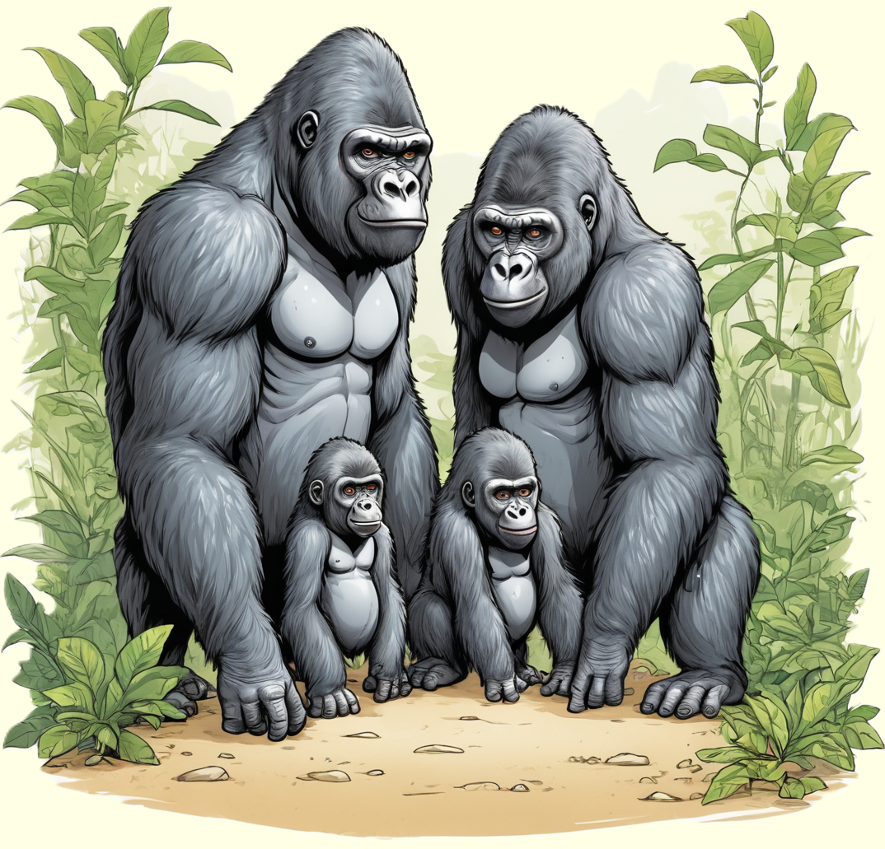

Gorillas, starke und soziale Tiere, faszinieren mit ihrer beeindruckenden Stärke und ihrem sanften Familienleben.
Lerne mehr über diese imposanten Primaten und ihre Lebensweise im dichten Dschungel.

Die starken Riesen des Waldes
Gorillas sind beeindruckende Tiere, die in den dichten Wäldern Afrikas leben.
Sie gehören zu den größten Primaten und haben eine starke, muskulöse Erscheinung.
Gorillas leben in Familien, die auch als Gruppen oder "Trupps" bezeichnet werden.
Diese Gruppen bestehen oft aus einem erwachsenen männlichen Silberrücken
(so genannt wegen des silbrig-grauen Fells auf seinem Rücken)
und mehreren Weibchen mit ihren niedlichen Gorillababys.
Die Silberrücken sind die Anführer der Gruppe und beschützen
ihre Familie vor möglichen Gefahren.
Geschickte Künstler und Spielkameraden
Gorillas sind nicht nur stark, sondern auch intelligent und einfallsreich.
In freier Wildbahn zeigen sie erstaunliche Fähigkeiten, wie das Nutzen von
Werkzeugen und das Basteln von Nestern zum Schlafen. Gorillas sind auch
verspielte Tiere und lieben es, miteinander zu toben und zu spielen.
Sie können Purzelbäume schlagen, miteinander herumalbern und sich gegenseitig necken.
Einige Gorillas haben sogar eine Vorliebe für das Malen! In einigen Zoos
erhalten Gorillas Farben und Leinwände, um Kunstwerke zu schaffen.
Diese kreativen Tätigkeiten zeigen, dass Gorillas nicht nur stark,
sondern auch einfallsreich und vielseitig sind.